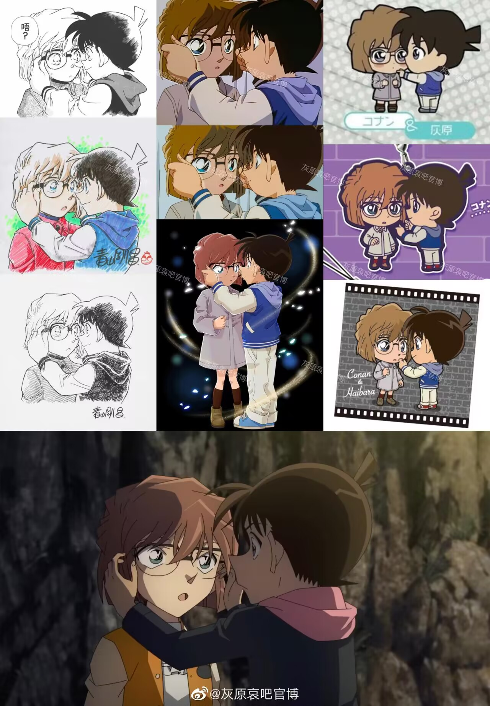
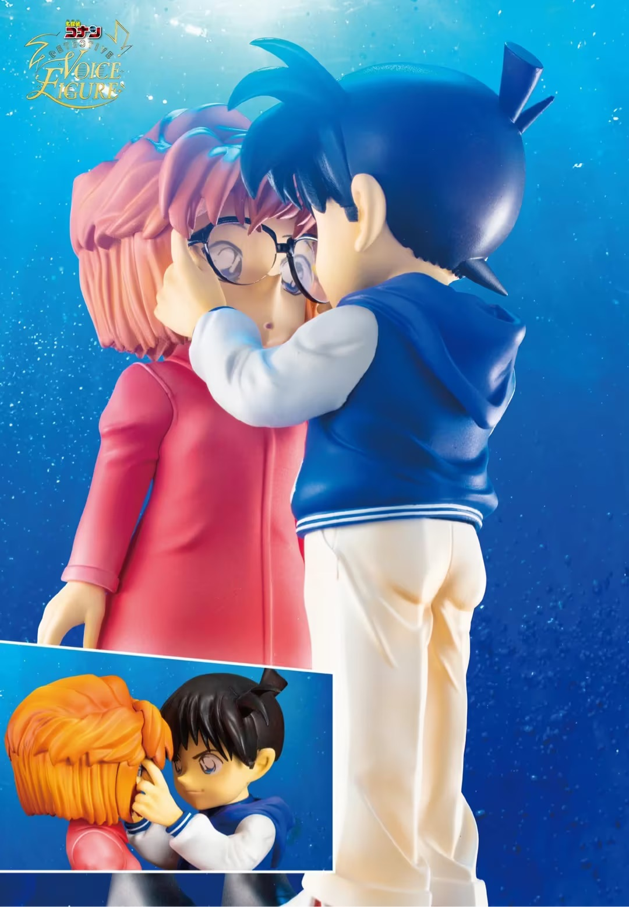

机打，B站漫画，没有插图，纯手打。
先说几个我和8友有异议的点，后续会进行纯文字版论述，尽量附上原著漫画范围。
1、柯南对赤井秀一没有吃醋，从红黑篇到列车篇，是一条赤柯帮助灰原哀成长的长线，这条线在赤柯联盟建立之初就制定好了。
2、三颗银弹是赤柯建立联盟的最初赤柯就制定好了的，三颗银弹各有分工，即“领域”。灰原哀是“药与组织”、赤井秀一是“暴力”、柯南是……“灰原哀”。
3、m26柯南和赤井秀一的分工也很明确了这一点，这个无关“占有欲”，它是和“领域”有关，即灰原哀是柯南的领域，赤井秀一对灰原哀的保护不能隐瞒柯南，必须在柯南允许的范围内活动，赤井对灰原哀的动作都事先和柯南通过气并提前商议好行动方案。
OK，以上几点说明，我们一点点的解析。
首先是“领域”，这个词汇在赤井相关的原著中特别经常的出现。包括灰原哀要揭赤井面具，以及列车篇赤井堵住灰原哀，赤井两次说出了“领域”这一词。一次是灰原哀要跨过领域，一次是赤井拉住灰原哀进入自己的领域。这里“领域”无关占有欲或者圈地盘，它更明确的是分工、负责的范围。即在赤井眼中灰原哀有其负责的分工的，那么这个分工其实可以很明确的确定，有一部分是“药”。
但是如果仅仅是“药”的部分的话其实赤柯本不需要花费力气去制定一个“灰原哀成长计划”来加速灰原哀的成长。那么在赤柯的计划里，灰原哀必须面对组织，必须和组织接触。所以赤井变身猫哥之后，“灰原哀黑衣组织加速适应计划”正式开启。
以下是该计划的一个猜测，根据来源……是列车篇之前一篇林中小屋着火影中兔子那一篇最后一段柯南的思维方式。先说剧情，摄影师（男）恐惧黑暗，但是其工作要求必须能够接触暗房，所以他的恋人把自己和摄影师一起关在林中小屋去适应黑暗，结果摄影师应激杀掉了恋人，引发了案件。这一案通常的关注点在于灰原哀恢复宫野志保然后暴露身份引起了黑组再次追杀。
但是这一案其实有很多暗喻，比方说“兔子”。那么这里谈一下的是最后柯志复盘案件的最后柯南角色代入的问题。这一案在最后有了一次柯南的主观代入，也就是他认为受害者最后的“兔子”手势并不是为了像警方揭露加害者，而是“想在自己临死之前想在胸口怀抱着最爱之人的形状——兔子吧……”。这一格漫画画得柯南扭头看月亮，没有去看宫野志保。
这一段有趣的点在于：
1、柯南很明显在移情，他把自己代入到了受害者，并给出了自己主观的死者想法。这个“想在自己临死之前想在胸口怀抱着最爱之人的形状——兔子吧……”是柯南的想法。那么受害者有什么特点让柯南可以产生共鸣？受害者的行为，为了帮助有黑暗恐惧的爱人克服恐惧，所以把自己和爱人一起困在黑暗之中，导致爱人应激和自己的死亡。而做出这一系列动作的自己……即使被爱人所伤害，也只是想怀抱她吧？
2、柯南的代入里，加害者是谁？很多人会说，那一定是……毛利兰！毛利兰怕鬼……柯南也好、工藤新一也好恐怕没有办法去给毛利兰捉鬼来锻炼她。而在这一章之前，其实反复强调恐惧、害怕的只有一个人，灰原哀害怕黑衣组织。那么如果加害者是灰原哀的话，解释得通吗？
3、赤新的“灰原哀成长计划”，回答上面的问题，当然解释得通，而且赤新的很多奇怪的行为也得到了解释，比如说柯南对于猫哥的身份解释一直是模糊的，他可以不说猫哥是赤井秀一是诸星大，但是猫哥的FBI身份为什么也不能说？在最初制定计划中，灰原哀不能对猫哥产生安全感。由此，赤井秀一每次现身吓表妹也很明确，他就是要灰原哀习惯这种气息，不再害怕。
在赤新最初联盟里，制定了帮助灰原哀克服恐惧的一个“小计划”，猫哥负责制造恐惧，柯南负责安抚情绪。那么如果灰原哀由此产生应激，最可能伤害得是陪伴她却不告诉她真相的柯南，而柯南认为，即使如此，他依旧不会伤害她。
由此说明的第二点是，赤新建立联盟最初就没打算踢灰原哀出局，只是她需要克服“恐惧”。在赤新联盟最初的设定中，灰原哀以后一定会不断不断接触组织，那么这种“雷达”还是早日适应比较好。
第三点就是柯南在“你不是讨厌他？”这句话的更明确的下一句是“是适应了吗？”，与其说是吃醋/占有欲不如说是关心，即“你是不是已经习惯了这种气息，已经不再害怕了？”
最后，小小抒情一下，从再会篇开始，柯南给自己锁定了一个命运共同体——灰原哀。他和灰原哀之间最初无关“喜欢”，他只是认定了和她同生共死而已。他知道灰原哀从来不打算和他一起死，他知道灰原哀最害怕的牵连他，但是从他站在皮斯科面前报下自己的名号“江户川柯南，是个侦探”开始，他这条江户川柯南的冒险之途只有一个同生共死的命运共同体——灰原哀。
先说几个我和8友有异议的点，后续会进行纯文字版论述，尽量附上原著漫画范围。
1、柯南对赤井秀一没有吃醋，从红黑篇到列车篇，是一条赤柯帮助灰原哀成长的长线，这条线在赤柯联盟建立之初就制定好了。
2、三颗银弹是赤柯建立联盟的最初赤柯就制定好了的，三颗银弹各有分工，即“领域”。灰原哀是“药与组织”、赤井秀一是“暴力”、柯南是……“灰原哀”。
3、m26柯南和赤井秀一的分工也很明确了这一点，这个无关“占有欲”，它是和“领域”有关，即灰原哀是柯南的领域，赤井秀一对灰原哀的保护不能隐瞒柯南，必须在柯南允许的范围内活动，赤井对灰原哀的动作都事先和柯南通过气并提前商议好行动方案。
OK，以上几点说明，我们一点点的解析。
首先是“领域”，这个词汇在赤井相关的原著中特别经常的出现。包括灰原哀要揭赤井面具，以及列车篇赤井堵住灰原哀，赤井两次说出了“领域”这一词。一次是灰原哀要跨过领域，一次是赤井拉住灰原哀进入自己的领域。这里“领域”无关占有欲或者圈地盘，它更明确的是分工、负责的范围。即在赤井眼中灰原哀有其负责的分工的，那么这个分工其实可以很明确的确定，有一部分是“药”。
但是如果仅仅是“药”的部分的话其实赤柯本不需要花费力气去制定一个“灰原哀成长计划”来加速灰原哀的成长。那么在赤柯的计划里，灰原哀必须面对组织，必须和组织接触。所以赤井变身猫哥之后，“灰原哀黑衣组织加速适应计划”正式开启。
以下是该计划的一个猜测，根据来源……是列车篇之前一篇林中小屋着火影中兔子那一篇最后一段柯南的思维方式。先说剧情，摄影师（男）恐惧黑暗，但是其工作要求必须能够接触暗房，所以他的恋人把自己和摄影师一起关在林中小屋去适应黑暗，结果摄影师应激杀掉了恋人，引发了案件。这一案通常的关注点在于灰原哀恢复宫野志保然后暴露身份引起了黑组再次追杀。
但是这一案其实有很多暗喻，比方说“兔子”。那么这里谈一下的是最后柯志复盘案件的最后柯南角色代入的问题。这一案在最后有了一次柯南的主观代入，也就是他认为受害者最后的“兔子”手势并不是为了像警方揭露加害者，而是“想在自己临死之前想在胸口怀抱着最爱之人的形状——兔子吧……”。这一格漫画画得柯南扭头看月亮，没有去看宫野志保。
这一段有趣的点在于：
1、柯南很明显在移情，他把自己代入到了受害者，并给出了自己主观的死者想法。这个“想在自己临死之前想在胸口怀抱着最爱之人的形状——兔子吧……”是柯南的想法。那么受害者有什么特点让柯南可以产生共鸣？受害者的行为，为了帮助有黑暗恐惧的爱人克服恐惧，所以把自己和爱人一起困在黑暗之中，导致爱人应激和自己的死亡。而做出这一系列动作的自己……即使被爱人所伤害，也只是想怀抱她吧？
2、柯南的代入里，加害者是谁？很多人会说，那一定是……毛利兰！毛利兰怕鬼……柯南也好、工藤新一也好恐怕没有办法去给毛利兰捉鬼来锻炼她。而在这一章之前，其实反复强调恐惧、害怕的只有一个人，灰原哀害怕黑衣组织。那么如果加害者是灰原哀的话，解释得通吗？
3、赤新的“灰原哀成长计划”，回答上面的问题，当然解释得通，而且赤新的很多奇怪的行为也得到了解释，比如说柯南对于猫哥的身份解释一直是模糊的，他可以不说猫哥是赤井秀一是诸星大，但是猫哥的FBI身份为什么也不能说？在最初制定计划中，灰原哀不能对猫哥产生安全感。由此，赤井秀一每次现身吓表妹也很明确，他就是要灰原哀习惯这种气息，不再害怕。
在赤新最初联盟里，制定了帮助灰原哀克服恐惧的一个“小计划”，猫哥负责制造恐惧，柯南负责安抚情绪。那么如果灰原哀由此产生应激，最可能伤害得是陪伴她却不告诉她真相的柯南，而柯南认为，即使如此，他依旧不会伤害她。
由此说明的第二点是，赤新建立联盟最初就没打算踢灰原哀出局，只是她需要克服“恐惧”。在赤新联盟最初的设定中，灰原哀以后一定会不断不断接触组织，那么这种“雷达”还是早日适应比较好。
第三点就是柯南在“你不是讨厌他？”这句话的更明确的下一句是“是适应了吗？”，与其说是吃醋/占有欲不如说是关心，即“你是不是已经习惯了这种气息，已经不再害怕了？”
最后，小小抒情一下，从再会篇开始，柯南给自己锁定了一个命运共同体——灰原哀。他和灰原哀之间最初无关“喜欢”，他只是认定了和她同生共死而已。他知道灰原哀从来不打算和他一起死，他知道灰原哀最害怕的牵连他，但是从他站在皮斯科面前报下自己的名号“江户川柯南，是个侦探”开始，他这条江户川柯南的冒险之途只有一个同生共死的命运共同体——灰原哀。
灰原哀在他那里从来不完美不坚强，她总是会被组织成员吓得瑟瑟发抖或者身体僵直，她总是会轻易抛却自己的生命去试图保护别人，她从来不会求助却总是在试图一个人抗下所有，她隐瞒了很多组织情报看起来并不信任他。但是，他知道她隐瞒情报是试图保护他，她不会求助他就把更多的注意力放到她身上，她不想牵连他他跟紧一点就好，她害怕总有他在身边。他相信有他在她总有一天会不害怕，不害怕牵连他。他也相信他们有一天会一起击败恶龙一起回家。
好有道理



天才解读 表哥时不时吓吓给哀酱脱敏
全新的角度，确实一定程度上合理解释了猫哥登场就吓人
讲得真好


但如果他们目的是让她脱敏，在知道她已经不怕猫哥的时候小柯应该更高兴吧？他那会儿的表现却不是那种目的达到的感觉，反而有点疑惑有点应激，他潜意识里还是不希望大表哥这么快就能进入她的世界的
2023-12-26 07:57 | minisaltearth:他疑惑是因为灰原哀的表现并不像她说得那样，即灰原哀此时其实有强迫自己接受猫哥是安全的那种意思，灰原哀后续解释“又不是小孩子”就是一样的意思2023-12-26 07:59 | minisaltearth:柯南对于灰原哀的情绪和行为很敏感的，在他看来灰原哀有强迫自己的那种行为，他希望灰原哀脱敏，但是不希望她强迫自己，他更希望是自己的安全感给足了
不错的角度，值得深挖。这样的分析的确很理性，但我个人认为客观上的描写确实起到了这样的作用，但台词的用意是否真的是在脱敏，我保持保留的态度。
非常好的角度，所以m26小哀能鼓起勇气带着直美逃出来，如果是过去的小哀确实未必能做到，可能会让直美自己走，小哀留下来直面组织/死亡
实际有个问题，哀最大的恐惧来源一直是“组织发现她后会针对她她身边的人行动”，而不是单纯地恐惧组织
说的好
赤井是琴酒，柯南是推理，灰原是药
说的真是好啊
是一个新的角度